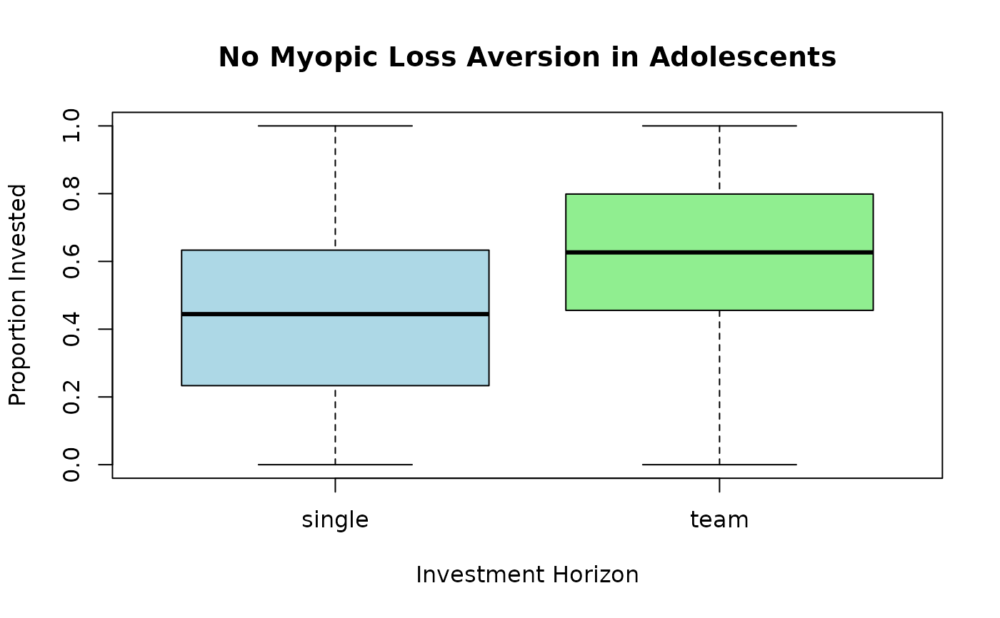

Data from a behavioral economics experiment assessing the extent of myopic loss aversion among adolescents aged 11 to 19 years. The experiment tests whether short-term investment horizons lead to more conservative investment behavior.
Format
A data frame with 570 observations on 7 variables:
- invest
numeric. Average proportion of tokens invested across all 9 rounds of the experiment (response variable).
- gender
factor. Gender of the player (or team of players).
- male
factor. Was (at least one of) the player(s) male (in the team)?
- age
numeric. Age of the player (or average age in case of team).
- grade
factor. School grade of the player(s).
- arrangement
factor. Investment horizon treatment with levels
short(1 round),medium(3 rounds), andlong(9 rounds).- treatment
factor. Type of treatment: long vs. short.
Details
The data were collected by Matthias Sutter and Daniela Glätzle-Rützler (Universität Innsbruck) in an experiment with high-school students in Tyrol, Austria (Schwaz and Innsbruck). The experiment tests the theory of myopic loss aversion, which proposes that investors with shorter evaluation periods are more loss-averse and thus invest less in risky assets.
Classical theory predicts that players with short investment horizons (myopic view) should invest less due to loss aversion. However, Sutter et al. (2015) found no evidence of myopic loss aversion in adolescents, contrary to findings in adult populations.
The investment game structure: In each round, players could invest tokens in a risky asset with 50% chance of doubling or losing the investment. The treatment varied the feedback frequency (short = every round, medium = every 3 rounds, long = only at the end).
References
Sutter, M., Kocher, M.G., Glätzle-Rützler, D., and Trautmann, S.T. (2015). No Myopic Loss Aversion in Adolescents? – An Experimental Note. Journal of Economic Behavior & Organization, 111, 169–176. doi:10.1016/j.jebo.2014.12.021
Kosmidis, I., and Zeileis, A. (2024). Extended-Support Beta Regression for (0, 1) Responses. arXiv:2409.07233. doi:10.48550/arXiv.2409.07233
Examples
# \donttest{
require(gkwreg)
require(gkwdist)
data(LossAversion)
# Control bounds
LossAversion$invest <- with(
LossAversion,
ifelse(invest <= 0, 0.000001,
ifelse(invest >= 1, 0.999999, invest)
)
)
# Example 1: Test for myopic loss aversion
# Do short-term players invest less? (They shouldn't, per Sutter et al.)
fit_kw <- gkwreg(
invest ~ arrangement + age + male + grade |
arrangement + male,
data = LossAversion,
family = "kw"
)
summary(fit_kw)
#>
#> Generalized Kumaraswamy Regression Model Summary
#>
#> Family: kw
#>
#> Call:
#> gkwreg(formula = invest ~ arrangement + age + male + grade |
#> arrangement + male, data = LossAversion, family = "kw")
#>
#> Residuals:
#> Min Q1.25% Median Mean Q3.75% Max
#> -0.6754 -0.2299 -0.0383 -0.0361 0.1480 0.5845
#>
#> Coefficients:
#> Estimate Std. Error z value Pr(>|z|)
#> alpha:(Intercept) -1.86038 0.56096 -3.316 0.000912 ***
#> alpha:arrangementteam 0.57810 0.14964 3.863 0.000112 ***
#> alpha:age 0.14165 0.04362 3.247 0.001166 **
#> alpha:maleyes -0.68895 0.15156 -4.546 5.47e-06 ***
#> alpha:grade10-12 -0.84625 0.19849 -4.264 2.01e-05 ***
#> beta:(Intercept) 0.06772 0.07482 0.905 0.365439
#> beta:arrangementteam 0.05586 0.12910 0.433 0.665226
#> beta:maleyes -1.09481 0.12394 -8.833 < 2e-16 ***
#> ---
#> Signif. codes: 0 ‘***’ 0.001 ‘**’ 0.01 ‘*’ 0.05 ‘.’ 0.1 ‘ ’ 1
#>
#> Confidence intervals (95%):
#> 3% 98%
#> alpha:(Intercept) -2.9598 -0.7609
#> alpha:arrangementteam 0.2848 0.8714
#> alpha:age 0.0561 0.2271
#> alpha:maleyes -0.9860 -0.3919
#> alpha:grade10-12 -1.2353 -0.4572
#> beta:(Intercept) -0.0789 0.2144
#> beta:arrangementteam -0.1972 0.3089
#> beta:maleyes -1.3377 -0.8519
#>
#> Link functions:
#> alpha: log
#> beta: log
#>
#> Fitted parameter means:
#> alpha: 0.8082
#> beta: 0.7676
#> gamma: 1
#> delta: 0
#> lambda: 1
#>
#> Model fit statistics:
#> Number of observations: 570
#> Number of parameters: 8
#> Residual degrees of freedom: 562
#> Log-likelihood: 160.8
#> AIC: -305.5
#> BIC: -270.8
#> RMSE: 0.2551
#> Efron's R2: 0.09284
#> Mean Absolute Error: 0.2115
#>
#> Convergence status: Successful
#> Iterations: 30
#>
# Interpretation:
# - Alpha: Effect of investment horizon (arrangement) on mean investment
# Age and gender effects on risk-taking
# - Beta: Precision varies by horizon and gender
# (some groups more consistent than others)
# Example 2: Interaction effects
# Does the horizon effect differ by age/grade?
fit_kw_interact <- gkwreg(
invest ~ grade * (arrangement + age) + male |
arrangement + male + grade,
data = LossAversion,
family = "kw"
)
summary(fit_kw_interact)
#>
#> Generalized Kumaraswamy Regression Model Summary
#>
#> Family: kw
#>
#> Call:
#> gkwreg(formula = invest ~ grade * (arrangement + age) + male |
#> arrangement + male + grade, data = LossAversion, family = "kw")
#>
#> Residuals:
#> Min Q1.25% Median Mean Q3.75% Max
#> -0.7512 -0.2281 -0.0302 -0.0323 0.1659 0.5579
#>
#> Coefficients:
#> Estimate Std. Error z value Pr(>|z|)
#> alpha:(Intercept) -0.88793 0.57872 -1.534 0.124960
#> alpha:grade10-12 -2.71402 1.56623 -1.733 0.083124 .
#> alpha:arrangementteam 0.44530 0.14176 3.141 0.001683 **
#> alpha:age 0.09114 0.04495 2.028 0.042604 *
#> alpha:maleyes -0.48035 0.13716 -3.502 0.000462 ***
#> alpha:grade10-12:arrangementteam 0.34515 0.25009 1.380 0.167555
#> alpha:grade10-12:age 0.07595 0.09788 0.776 0.437775
#> beta:(Intercept) 0.57264 0.08752 6.543 6.02e-11 ***
#> beta:arrangementteam 0.12743 0.12998 0.980 0.326879
#> beta:maleyes -0.98691 0.12364 -7.982 1.44e-15 ***
#> beta:grade10-12 -1.05841 0.10730 -9.864 < 2e-16 ***
#> ---
#> Signif. codes: 0 ‘***’ 0.001 ‘**’ 0.01 ‘*’ 0.05 ‘.’ 0.1 ‘ ’ 1
#>
#> Confidence intervals (95%):
#> 3% 98%
#> alpha:(Intercept) -2.0222 0.2464
#> alpha:grade10-12 -5.7838 0.3557
#> alpha:arrangementteam 0.1675 0.7231
#> alpha:age 0.0030 0.1793
#> alpha:maleyes -0.7492 -0.2115
#> alpha:grade10-12:arrangementteam -0.1450 0.8353
#> alpha:grade10-12:age -0.1159 0.2678
#> beta:(Intercept) 0.4011 0.7442
#> beta:arrangementteam -0.1273 0.3822
#> beta:maleyes -1.2292 -0.7446
#> beta:grade10-12 -1.2687 -0.8481
#>
#> Link functions:
#> alpha: log
#> beta: log
#>
#> Fitted parameter means:
#> alpha: 0.9604
#> beta: 0.9774
#> gamma: 1
#> delta: 0
#> lambda: 1
#>
#> Model fit statistics:
#> Number of observations: 570
#> Number of parameters: 11
#> Residual degrees of freedom: 559
#> Log-likelihood: 211.6
#> AIC: -401.2
#> BIC: -353.4
#> RMSE: 0.2521
#> Efron's R2: 0.1145
#> Mean Absolute Error: 0.2092
#>
#> Convergence status: Successful
#> Iterations: 44
#>
# Interpretation:
# - Grade × arrangement interaction tests if myopic loss aversion
# emerges differently at different developmental stages
# Example 3: Extended-support for boundary observations
# Some students invest 0% or 100% of tokens
# Original 'invest' variable may include exact 0 and 1 values
fit_xbx <- gkwreg(
invest ~ grade * (arrangement + age) + male |
arrangement + male + grade,
data = LossAversion,
family = "kw" # Note: for true [0,1] support, use extended-support models
)
summary(fit_xbx)
#>
#> Generalized Kumaraswamy Regression Model Summary
#>
#> Family: kw
#>
#> Call:
#> gkwreg(formula = invest ~ grade * (arrangement + age) + male |
#> arrangement + male + grade, data = LossAversion, family = "kw")
#>
#> Residuals:
#> Min Q1.25% Median Mean Q3.75% Max
#> -0.7512 -0.2281 -0.0302 -0.0323 0.1659 0.5579
#>
#> Coefficients:
#> Estimate Std. Error z value Pr(>|z|)
#> alpha:(Intercept) -0.88793 0.57872 -1.534 0.124960
#> alpha:grade10-12 -2.71402 1.56623 -1.733 0.083124 .
#> alpha:arrangementteam 0.44530 0.14176 3.141 0.001683 **
#> alpha:age 0.09114 0.04495 2.028 0.042604 *
#> alpha:maleyes -0.48035 0.13716 -3.502 0.000462 ***
#> alpha:grade10-12:arrangementteam 0.34515 0.25009 1.380 0.167555
#> alpha:grade10-12:age 0.07595 0.09788 0.776 0.437775
#> beta:(Intercept) 0.57264 0.08752 6.543 6.02e-11 ***
#> beta:arrangementteam 0.12743 0.12998 0.980 0.326879
#> beta:maleyes -0.98691 0.12364 -7.982 1.44e-15 ***
#> beta:grade10-12 -1.05841 0.10730 -9.864 < 2e-16 ***
#> ---
#> Signif. codes: 0 ‘***’ 0.001 ‘**’ 0.01 ‘*’ 0.05 ‘.’ 0.1 ‘ ’ 1
#>
#> Confidence intervals (95%):
#> 3% 98%
#> alpha:(Intercept) -2.0222 0.2464
#> alpha:grade10-12 -5.7838 0.3557
#> alpha:arrangementteam 0.1675 0.7231
#> alpha:age 0.0030 0.1793
#> alpha:maleyes -0.7492 -0.2115
#> alpha:grade10-12:arrangementteam -0.1450 0.8353
#> alpha:grade10-12:age -0.1159 0.2678
#> beta:(Intercept) 0.4011 0.7442
#> beta:arrangementteam -0.1273 0.3822
#> beta:maleyes -1.2292 -0.7446
#> beta:grade10-12 -1.2687 -0.8481
#>
#> Link functions:
#> alpha: log
#> beta: log
#>
#> Fitted parameter means:
#> alpha: 0.9604
#> beta: 0.9774
#> gamma: 1
#> delta: 0
#> lambda: 1
#>
#> Model fit statistics:
#> Number of observations: 570
#> Number of parameters: 11
#> Residual degrees of freedom: 559
#> Log-likelihood: 211.6
#> AIC: -401.2
#> BIC: -353.4
#> RMSE: 0.2521
#> Efron's R2: 0.1145
#> Mean Absolute Error: 0.2092
#>
#> Convergence status: Successful
#> Iterations: 44
#>
# Interpretation:
# - Model accommodates extreme risk-taking (all-in or all-out strategies)
# Compare models
anova(fit_kw, fit_kw_interact)
#> Analysis of Deviance Table
#>
#> Model 1: invest ~ arrangement + age + male + grade | arrangement + male
#> Model 2: invest ~ grade * (arrangement + age) + male | arrangement + male +
#> Model 2: grade
#>
#> Resid. Df Resid. Dev Df Deviance Pr(>Chi)
#> fit_kw 562.00000 -321.52333
#> fit_kw_interact 559.00000 -423.16260 3 101.63927 < 1e-04 ***
#> ---
#> Signif. codes: 0 '***' 0.001 '**' 0.01 '*' 0.05 '.' 0.1 ' ' 1
# Visualization: Investment by horizon
boxplot(invest ~ arrangement,
data = LossAversion,
xlab = "Investment Horizon", ylab = "Proportion Invested",
main = "No Myopic Loss Aversion in Adolescents",
col = c("lightblue", "lightgreen", "lightyellow")
)

# }